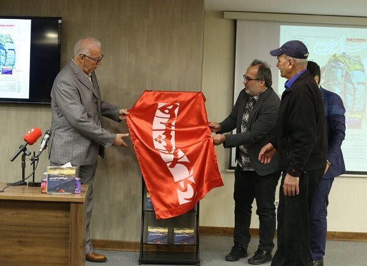

در رونمایی از «سرزمین من» مطرح شد؛
روایت کوهنوردان از مبارزه با کوهستان؛ جنازههایی که از سالها پیش ماندهاند
به گزارش خبرگزاری مهر، مراسم رونمایی از کتاب-مجله سرزمین من با موضوع کوههای تهران، با حضور پیشکسوتان
کوهنوردی در موسسه همشهری برگزار شد. در این نشست از ۱۰ کوهنورد تهرانی نیز تجلیل به عمل آمد.
داریوش شهبازی، تهران پژوه و کوهنورد در ابتدای این مراسم گفت: ثبت صعود به دماوند، از سال ۱۳۱۰ به صورت
رسمی و به عنوان «کوهنوردی» انجام شده است. پیش از آن علاوه بر خارجیها، ایرانیانی در دوره قاجار این قله
را صعود کرده و ارتفاع آن را با روشهای مرسوم در زمانه خود سنجیدهاند. پیش از راهاندازی فدراسیون
کوهنوردی در سال ۱۳۵۶ باشگاههای کوهنوردی مانند باشگاه افسران ارتش، حزب پیکار، باشگاه تبریز و ...
صعودهایی را به ثبت رساندهاند. امروزه صعود یک روزه به توچال بسیار رایج شده است در حالی که در گذشته چند
روز زمان نیاز بود. رسم کوهنوردی موضوعی است که کوهنوردان جوان نیاز دارند باد بگیرند. با چند ده کیلو
خوراکی صعود میکنند ولی حاضر نیستند که ۲۰۰ گرم زبالههایشان را برگردانند.
عزیز خلج، رییس کمیته پیشکسوتان فدراسیون کوهنوردی نیز در ادامه افزود: زمستان توچال را دستکم نگیرید.
خیلیها تصور میکنند شرایط در کوهستان مثل این پایین در دامنه است. این کوه همان مخاطرات قلههای ۴ هزار
متری را دارد. بیشترین تلفات در توچال ثبت میشود. جوانها «واکمن» در گوششان میگذارند و از اطرافشان
خبردار نمیشوند. به هشدارها توجه کنید. به کوهنوردهای دیگر کمک کنید. از شهرداری منطقه یک ناحیه کوهستان هم
میخواهیم تابلوهای راهنما را که در گذر زمان فرسوده و رنگپریده شدهاند ترمیم کند.
مشارکت مردمی در ساخت جانپناههای تهران
کاوه کاشفی، رییس سابق هیات کوهنوردی استان تهران در بخش بعدی این مراسم گفت: اولین جانپناهها در قلههای
اطراف تهران با مشارکت مردی ساخته شده است. روزگاری که اولین صعودها به قله توچال از دربند نبود، کوهنوردان
در مسیر قله در محدوده اسپیدکمر در سال ۱۳۲۶ با همت کوهنوردان و مصالح منطقه برای کوهنوردان جانپناه ساختند.
تا سال ۱۳۴۶ که فدراسیون کوهنوردی زمین پناهگاه شیرپلا را از مش صفر بخرد و هر گونه ساخت و ساز برای جانپناه
در کوهستان با مشارکت مردمی انجام شده است. مخاطرات کوهستانهای تهران را دستکم نگیرید. تا پیش از اینکه در
سال ۱۳۸۶ ستاد اطلاع رسانی و پیشگیری از حوادث کوهستان راه بیفتد، کوهنوردان پیشکسوت در مسیرهای شلوغ صعود
میایستادند و شرایط هوا، لباس و غذا را به سایر کوهنوردان متذکر میشوند. در آن سالها، توچال سالانه ۲۰
کشته میداد.
زینال مظلومی، کوهنورد تهرانی نیز گفت: در هفت روز جدالی که با مرگ در جبهه شمال دماوند داشتم تنها چیزی که
نجاتم داد امید بود. در اواخر خرداد سال ۱۳۷۹ در برنامه صعود به دماوند، با پای شکسته هفت روز در ارتفاع
۵۲۰۰ دره یخار گرفتار شده بودم بدون آب و غذای کافی. در این روزها ۲۷ کیلو وزنم کم شد در حالی که تیمهای
امداد و نجات در تلاش بودند من را پیدا کنند. بالای سرم در مسیر چندین جنازه از سالهای قبل بود و
نمیدانستم آیا من نفر بعدی هستم؟ سرانجام مرحوم حسن افشار از پیشکسوتان سنگنوردی قزوین با تیم نجات سر
رسید و نجاتم داد. توصیه میکنم علاوه بر همه روزهای سفر، برای روز مبادا در کوهنوردی نیز آذوقه ببرید. من
یک قوطی کنسرو لوبیا و یک کمپوت آناناس داشتم که میخواستم تا آخرین لحظه توانم آنها را نگه دارم، خوشبختانه
با آمدن تیم نجات، با آنها شریک شدم. چند روز پیش در قله توچال فردی را با دستهای سیاه شده از سرما، بدون
دستکش دیدم که فقط برای دیدن توچال برای اولین بار راهی قله شده بود. لطفا بدون امکانات به هیچ قلهای
نروید.
در بخش پایانی این مراسم از حمید مساعدیان، پزشک کوهستان، مجید قیدینژاد، زینال مظلوم، بهمن حاج هاشمی،
پروین رضایی، فاطمه فتحاللهی، بهنام بهلولی، راشین جهانبازی، عبدالرضا زمانیفر، مجتبی ساقیان به عنوان
کوهنوردان تهرانی تقدیر شد.